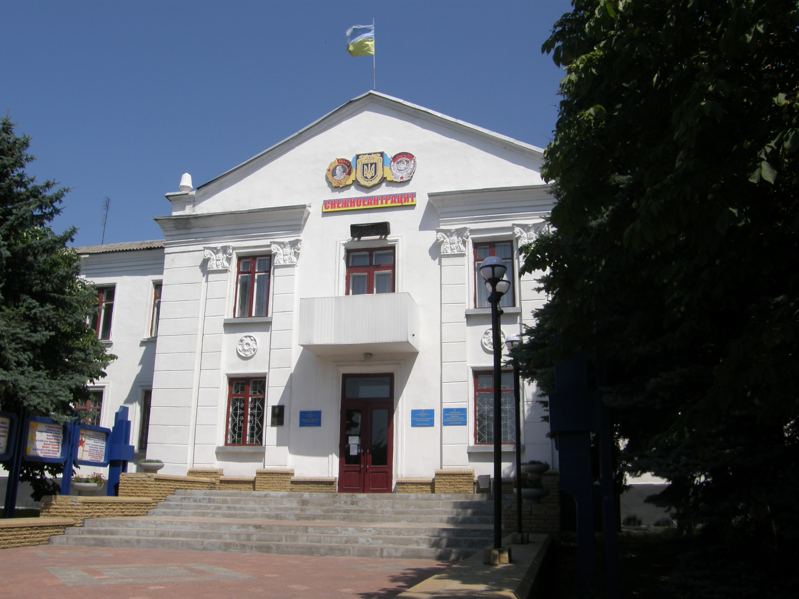

Снежное
 Город Снежное основан в 1784 году. День города снежнянцы приурочили ко дню освобожде-ния города от фашистских войск в 1943 году – 1 сентября. Согласно административно-территориального деления город делится на 14 населенных пунктов (1 город: Снежное; 10 поселков городского типа: Андреевка, Горняцкое, Бражино, Лиманчук, Ники-форово, Залесное, Первомайский, Первомайское, Победа, Северное; 3 поселка: Червоный Жовтень, Молчалино, Суховское).